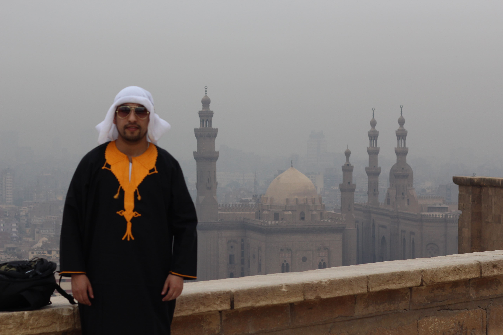

Tips Egipto en 8 Días.

Nuevo viaje, nueva aventura. Por fin he visitado Egipto. El viaje soñado desde que era niño lo he podido cumplir. No saben las ganas que tenía de visitarlo y sin duda, no me ha defraudado en nada. Ojalá hubiera podido visitarlo más tiempo pero solo disponía de una semana para ver algunas cosas de este hermoso país. Aunque eso tiene su parte positiva porque seguramente lo repetiré en un futuro.
En este post les voy a dejar toda la información general sobre Egipto: detalles básicos del destino, información sobre la seguridad del país, itinerario, etc.
Clicktraveller Viajando Por Egipto 8 Días:
Dia 2 Egipto
Dia 3 Egipto
Dia 4 Egipto
Dia 5 Egipto
Dia 6 Egipto
Dia 7 Egipto
Dia 8 Egipto
Dia 1: Llegada al Cairo y Alojamiento
Llegué al aeropuerto de El Cairo, terminal 2, a la 1:30 a.m y me esperaba Ahmed, el representante de Civitatis. Lo encontramos junto a todo el grupo antes de recoger las maletas y pasar el control fronterizo, cosa que nos sorprendió.
Pero es que lo hizo de esa manera porque ya tenía preparado nuestro visado de entrada al país. Nos pidió él mismo el pasaporte y nos acompañó en el control fronterizo en todo momento. De esta manera fue todo muy rápido, cosa que nos alegró porque al llegar de noche a la 1:30 am lo que tienes ganas es de llegar e ir al hotel a descansar. Ahmed nos dijo que nos entraba la cena o cualquier cosa de comer, pero a esas horas ya no queríamos nada sólido, sólo paramos en el camino para comprar agua.
El camino al hotel nos llevó unos 35 minutos al ser de noche y no haber casi tráfico. Mientras nos dirigíamos al alojamiento Ahmed nos explicaba el itinerario del día siguiente y cosas interesantes para nuestra estancia. Nos instalamos en el hotel Oasis pyramids por 3 noches, del 1 al 4 de marzo.
Nosotros llegamos a Egipto en un vuelo por libre, desde allí todo el recorrido por Egipto en una semana va a ser organizado. El viaje tiene un precio interesantísimo y sin duda, una vez hecho, se los recomiendo 100% ya que dispone de TODO INCLUIDO en el trayecto. Hablamos del visado sólo llegar, de los alojamientos, las comidas, todas las excursiones y visitas guiadas, traslados, crucero y aviones internos, incluso propinas!!. Como les comento, lo único no incluido son los vuelos desde Chile a Egipto o el seguro de viaje.

Dia 2: Pirámides de Giza, Memfis y Sakkara
Dedicaremos la segunda jornada de este Egipto en una semana a conocer:
- Pirámides de Giza: Keops, Kefrén y Micerinos
- Memfis y la gran estatua de Ramsés II tumbada
- Complejo de Sakkara
Después del desayuno sacamos dinero del cajero automático dentro del recinto del hotel Pyramids. El cajero te obligaba a sacar como máximo 1000 libras egipcias, o sea, poco más de 53€, por lo que tuvimos que sacar 3 veces. la suerte es que tenemos nuestra tarjeta BNEXT que no tiene comisiones en los cajeros (bueno, en ese momento no tenía), si no ya nos hubieran fundido una buena comisión.
8:30 nos recoge el minibus y nos traslada a las pirámides donde Ahmed nos presenta al guía que nos acompañará los 2 días por el Cairo y luego en el crucero por el Nilo. Su nombre Hossam, espada en árabe.
Pirámides de Giza
Vamos a recorrer el complejo de las pirámides y estaremos casi 4 horas visitándolo. Además de ver la pirámide de Keops y Micerinos, vemos la pirámide de Kefrén por dentro , entramos en una tumba frente a la pirámide de Keops, vamos al mirador de las pirámides y acabamos en la Esfinge.
No vemos la pirámide de Keops por dentro porque no tenemos tanto tiempo y además es la más cara de las tres. Para que se hagan una idea, Kefr√©n son 100 libras egipcias y Keops 400. En la visita con Civitatis o con cualquiera que les entre una pirámide por dentro, ya saben cuál les va a tocar üôÇ
De todas formas volveremos para entrar a la pirámide de Keops cuando acabe nuestro viaje a Egipto en 11 días (esta semana, en realidad 8 días más extensión al mar Rojo) en el que después de esos días nos quedamos otros 4 días completos más en El Cairo.
Memfis y Sakkara

Salimos hacia Menfis donde paramos para contemplar la gran estatua de Ramsés II tumbada.
Proseguimos hasta el complejo de Sakkara viendo la pirámide escalonada por fuera (no entramos al interior de la pirámide escalonada de Saqqara aunque sí lo hicimos en nuestra estancia de 4 días en El Cairo por libre a la vuelta de este recorrido por Egipto en una semana organizado) y entramos en la pirámide de Teti.
En el camino de vuelta al Cairo paramos a comer.
El Cairo nocturno
Aunque tenga ese título vimos un buen rato el bazar de Jan el Jhalili con luz y luego empezamos un tour nocturno por El Cairo Islámico partiendo desde el famoso Café de los Espejos, calle Al Muni, para terminar en la puerta de la muralla Bab al-Futuh.
Allí nos recogen a los tres, Hossam, Marta y yo y vamos a cenar a las orillas del Nilo en un restaurante llamado The Platform. La cena fue entre las 20:30 y 21:30 y nos dieron unas buenas pizzas. Esa fue nuestra elección. Hossam nos preguntó si queríamos ir a un restaurante tradicional pero al haber comido en uno por el camino, nos apetecía otra cosa.
Acabamos un día completísimo, hemos comenzado a las 8:30 am y acabamos a las 22:15 en el hotel. Hemos visto un montón de cosas, y como siempre en Egipto, interesantísimas.
Dia 3: Visitar El Cairo viendo barrio Copto, la fortaleza de Saladino y mezquita de Alabastro, museo del Cairo
Ciudadela de Saladino y mezquita de Alabastro

Comienza el día a las 8:30h. Recorremos con Hossam todo este complejo de la Ciudadela de Saladino en el que destacamos su gran mezquita de Alabastro y las vistas de El Cairo que se obtienen del mirador que hay junto a ella.
Nuestro guía nos cuenta muchísimas cosas de esta ciudadela. En realidad llevamos ya 2 días con él y nos damos cuenta que hemos tenido muchísima suerte. Es un chico simpático, culto y sabe lo que quiere el turista, además de ser bastante flexible y adaptarse a los gustos de cada cliente. Pues eso, como sabe que nos gusta la historia, el chico se explaya y nos da muy buenos datos de todo. A nosotros, como también nos gusta dar en la vara, por eso te dejo muchos datos de este lugar aquí debajo.
El barrio Copto
Posteriormente nos acercamos al barrio copto de El Cairo, la
zona antigua cristiana o barrio Qasr al-Sham. En este lugar recorremos
varios de
sus lugares principales.
Por ejemplo entramos a:
- La iglesia colgante
- La iglesia de San Jorge
- Iglesia de San Sergio
- La Iglesia de Santa Barbara
- La Sinagoga Ben Ezra.
- También vemos desde el exterior el Museo Copto y la Fortaleza de Babilonia.
Al irnos hacia nuestro siguiente destino paramos un momento en la cercana Mezquita de Amr ibn al-Aas para contemplarla desde el exterior. Fue en su momento la primera mezquita construida en El Cairo. la mezquita que vemos en la actualidad está muy reconstruida y restaurada.
Museo antiguo del Cairo
Antes de ir al museo comimos en un barco restaurante amarrado en el río Nilo junto al Puente del 6 de Octubre que une la isla Gezira (donde está la Torre del Cairo) con la zona del museo y plaza Tahrir.
Por la tarde y hasta las 17h en la que cierra el museo, vemos todo lo que ofrece la colección en la antigüedad y que han quedado después del traslado al GEM y al NMEC.
Después de descansar un rato en el hotel nos entra una cena en la terraza del restaurante Cleopatra con vistas de las pirámides de noche, así que acabamos el día viendo las pirámides iluminadas.
Dia 4: Vuelo a la ciudad de Luxor
Después de desayunar, nos dirigimos a las 10 am al aeropuerto y embarcamos en un vuelo a las 12:15 con destino a Luxor. Tras una hora de vuelo llegamos a esta ciudad de Egipto.
Una vez allí, nos trasladamos 15 minutos desde el aeropuerto y nos instalamos en el crucero que nos llevará por el Nilo durante cuatro días.
En el resto de tarde libre visitamos por nuestra cuenta el museo de la momificación (100 libras) y el museo de Luxor (140 libras).

Dia 5: Visitar templo de Luxor, de Karnak y valle de los Reyes, además de Deir El Bahari y Colosos de Memnon
Dedicaremos el quinto día de nuestro itinerario de Egipto en una semana a conocer:
- Luxor desde un globo
- Templo de Karnak
- Templo de Luxor
- Valle de los Reyes
- Templo de Hatshepsut
- Colosos de Memnon
Comienza nuestra estancia en el barco en la que estamos instalados en principio sin navegar y viendo la zona de Luxor este día.
Paseo en globo por Lúxor al amanecer
A las 3:15 am nos levantamos y tomamos un café para salir a las 3:40am. Sorprendentemente nos damos cuenta que a esta hora las calles están puestas y el Nilo fluye con la misma intensidad que por el día.
Cruzamos el Nilo en una barca para ahorrar tiempo en llegar a la otra orilla por carretera. Allí nos espera un minibús que nos traslada al área acotada para el ascenso de los globos. Es una pasada ver toda la organización y el inflado de los globos. Una vez todo preparado subimos a la cesta y disfrutamos de un inolvidable paseo en globo sobre Lúxor al amanecer.
El vuelo dura aproximadamente 50 minutos y vemos la salida del sol en los templos y montañas en este margen oeste del río Nilo. Desde lo alto contemplamos el Valle de los Reyes, de los Nobles, el templo funerario de la reina Hatshepsut, los colosos de Memnon, el rameseum y a lo lejos Luxor y el Nilo.
Una vez vivida la experiencia les puedo decir que es una de las cosas más impactantes que hemos vivido en este viaje a Egipto en 7 días, y les aseguro que han sido unas cuantas alucinantes.
Al concluir el paseo en globo por Lúxor al amanecer nos dieron un certificado de vuelo que acreditaba el haber disfrutado de esta gran experiencia. A m√≠ me hizo mucha ilusi√≥n porque no he recibido muchos diplomas a lo largo de mi vida üôÇ
Volvemos al barco para desayunar sobre las 6:15h.
Templo de Karnak

Salimos de nuevo a las 7:30am para disfrutar a primera hora del templo de Karnak lo más vacío posible. En esta mañana vamos a visitar 2 de los templos más alucinantes de Egipto, el Templo de Lúxor y el de Karnak, separados por la Avenida de las Esfinges, una calle de tres kilómetros de longitud que se está restaurando para que vuelva a tener el recorrido que tenía en el Antiguo Egipto.
Karnak es el templo más grande de Egipto, con 2.400 metros de perímetro. El Templo de Karnak lo construyeron los faraones del Imperio Nuevo, a lo largo del mandato de 67 faraones durante más de 2.000 años. Está dedicado a Amón-Ra, dios del Sol.
Templo de Luxor

Nuestra segunda parada será el Templo de Luxor, otro de los monumentos más importantes, antiguamente el segundo templo más grande de la Tebas. Lo construyeron varios faraones como Ramsés II, Ramsés III y Amenhotep III. Está dedicado al dios Amón.
Valle de los Reyes

Ponemos rumbo a las gigantescas necrópolis cercanas a Luxor. Visitamos el Valle de los Reyes, en concreto 3 tumbas más la opcional tumba de Tutankamon.
Templo de Hatshepsut y Colosos de Memnón
el Templo de Hatshepsut está dedicado a la única mujer faraón que reinó en Egipto durante el Imperio Nuevo. Está en el complejo de Deir el Bahari, en la orilla oeste del río Nilo, cerca del Valle de los Reyes. Es el más importante del complejo funerario junto con el templo de Tutmosis III y Mentuhotep Nebhepetre, este último faraón mucho más antiguo, de la dinastía XI.
Del templo de Hatshepsut, Patrimonio de la Humanidad, destacamos su curiosa estructura ya que está construido directamente en la roca, integrada en ella y la ladera de la montaña. La verdad es que es único en su género en todo Egipto (aunque el de Mentuhotep II le sirvió como modelo).

Después volvemos hacia el barco y paramos en los Colosos de Memnón, las 2 gigantescas estatuas de piedra que representan al faraón Amenhotep III. Estas dos estatuas gemelas son los restos mejor conservados de lo que fue el antiguo templo de este faraón.
Cuando llegamos al barco a las 14:50h iniciamos la navegación y nos vamos a comer al buffet. En la navegación cruzamos la primera presa del Nilo.

Dia 6: Crucero por el Nilo con parada en Edfu, Kom Ombo, Asuán.
El sexto día de este Egipto en una semana visitaremos:
- Templo de Edfú
- Templo de Kom Ombo
Los cruceros por el Nilo es otro de los imprescindibles que hacer en Egipto en una semana. El Antiguo Egipto es un regalo del Nilo, no se puede entender su historia sin ese río y sus crecidas. Él es la vida y el desierto es la muerte. Navegar por sus aguas, me refiero a un tramo largo y no en una faluca, es sentir toda aquella milenaria civilización.
Crucero por el Nilo de 4 noches de Lúxor a Asuán
Crucero por el Nilo de 3 noches de Asuán a Lúxor
Una vez desayunados a las 7:30 am salimos en un carruaje hacia el Templo de Edfu, dedicado al Dios Horus. El templo de Edfu, de época Ptolemaica, se conserva muy bien, casi intacto. Resaltamos que es el segundo templo más grande del Antiguo Egipto después del gran templo de Karnak.
El crucero continúa navegando a las 10:30 y disfrutamos de la piscina y del sol radiente de Egipto. Comemos sobre las 13h.
Templo de Kom Ombo

A las 16:30 ya estamos frente al templo de Kom Ombo, donde visitaremos el templo dedicado a los dioses Sobek y Hareoris, un templo dual que duplica también su arquitectura. Su interior destaca por varias salas hipóstilas o “bosques de columnas” ornamentadas con jeroglíficos. También hay un pequeño museo dedicado a las momias de cocodrilo que puedes visitar con la misma entrada al complejo arqueológico.
Después de la visita iniciamos la navegación a las 18:30h hasta Asuán, donde pasamos la noche.
Dia 7: Templo de Abu Simbel y excursión al poblado Nubio
Partimos de Asuán sobre las 4:15 de la mañana. Nos recogen en el barco y vamos a un par de alojamientos a buscar más gente. Al salir los primeros podemos tomar los asientos de atrás, por lo que pudimos dormir estirados casi todo el trayecto de 3 horas.
Excursión a Abu Simbel
Se sale tan pronto para llegar a los templos a primera hora y evitar el calor del medio día, que en esta parte del sur del país es muy potente.
Después de unas 3 horas de trayecto llegamos a Abu Simbel, el complejo de 2 templos excavados en la roca, uno dedicado a Ramsés II y otro a Nefertari, su primera esposa. La construcción tardó unos 20 años en acabarse. El estado de conservación de los templos es muy bueno, ya que estuvieron enterrados bajo la arena hasta el siglo XIX.
Para evitar que quedaran inundados en la construcción de la gran presa de Asuán se procedió al traslado pieza por pieza y se ubicaron en otro lugar más elevado. este proyecto internacional casi es una maravilla como el mismo templo de Abu Simbel. Pese a la tecnología moderna no lograron atinar perfectamente en las dos veces al año que se ilumina el sagrario en Abu Simbel, 22 febrero y 22 octubre.
La visita fue de 2 horas, tiempo suficiente para ver ambos templos, aunque podrías quedarte embelesado mucho más tiempo por sus rincones.
Después de la visita regresamos a Asuán sobre las 10 am, llegando al barco a las 13:10 pm y nos vamos a comer.
Excursión al poblado nubio
Nos montamos en la típica faluca aunque al cabo de un rato cambiamos a una barca más grande con motor, con la que recorrimos el Nilo hacia el sur.
Pasamos frente al mausoleo de Aga Khan y más tarde paramos a bañarnos en una playa de arena fina.

Seguimos rumbo a Gharb Soheil, más conocido como el pueblo nubio de casas coloridas. Nubia fue la región de África situada entre el sur de Egipto y el norte de Sudán. Los nubios tienen la piel muy oscura, una transición a lo que viene más hacia el sur, por ejemplo en Etiopía y las cataratas del Nilo Azul.
En el pueblo recorrimos su mercado y entramos en una de sus casas para ver las habitaciones, sus pinturas. Nos invitaron a su comida típica y tés tradicionales, escuchar su música y nos ofrecieron hacernos un tatuaje de henna.
Después del poblado nubio regresamos por el mismo camino hasta el barco.
Dia 8: Templo de Filae y traslado al Mar Rojo
Último día del viaje a Egipto en una semana

Nuestro último día de este viaje a Egipto en 8 días lo dedicaremos a visitar el Templo de Filae, ubicado en una bonita isla y conocido como la Joya del Nilo. Salimos a las 7 am al templo para verlo con menos visitantes.
Llegamos a él en barca, la única forma de acceder. El templo de Filae casi acaba sumergido en el agua por el proyecto de la construcción de la Presa de Asuán, así que fue trasladado piedra a piedra hasta el lugar que se halla en la actualidad y que está muy cerca de su emplazamiento original, lo mismo que Abu simbel. Fue construido en diferentes etapas a partir de la XXX dinastía y ya en época de los Ptolomeos y época romana. Ya era de noche y vamos devuelta al hotel.
Se acaba esta semana en Egipto, en realidad han sido 7 días u 8
si contamos el de llegada.

Conclusión de este viaje a Egipto en 7 días
La verdad es que una vez testeado el tema sólo podemos quitarnos la boina y poner el pulgar en alto. Me parece una manera super recomendable de recorrer el país si sólo dispones de 7 días en Egipto para hacer el recorrido que te hemos indicado. El tiempo está super economizado, ya habrás visto que hemos visto muchas cosas. En la mayoría de este tipo de tours organizados sacan el tiempo de las visitas, pero en este Egipto al completo nos ha parecido que de donde lo han sacado ha sido de cosas innecesarias que te lo hacen perder, es decir, traslados, búsqueda del transporte, sacar entradas, etc.
Todo lo llevan muy controlado. Por ejemplo, en la parte del paseo por el Cairo islámico el microbús nos trae del barrio copto y nos deja junto a la mezquita de Al Azhar. Después de andar al otro extremo del laberíntico barrio, salimos en la puerta de la muralla y allí nos espera el mismo vehículo que nos lleva a cenar en la ribera del Nilo. Pues eso en todo el viaje, muy bien aprovechado y optimizado a tope.
Si a eso le sumamos que estáTODO INCLUIDO, visado al llegar, alojamientos, comidas, excursiones y visitas guiadas, traslados, crucero y aviones internos, incluso propinas, llegamos a la conclusi√≥n de que se lo recomendar√≠a a familias, amigos y a ustedes lectores, que casi lo son üôÇ


5 Comentarios
A.Dadario
Me encanta la historia de Roma.
K.Reeves
Muchos guerreros notables pasaron por el coliseo Romano para entrener a la gente.
O.Wilde
Nadie podría decir no a una cena romantica cerca del coliseo.
Dejame Un Comentario